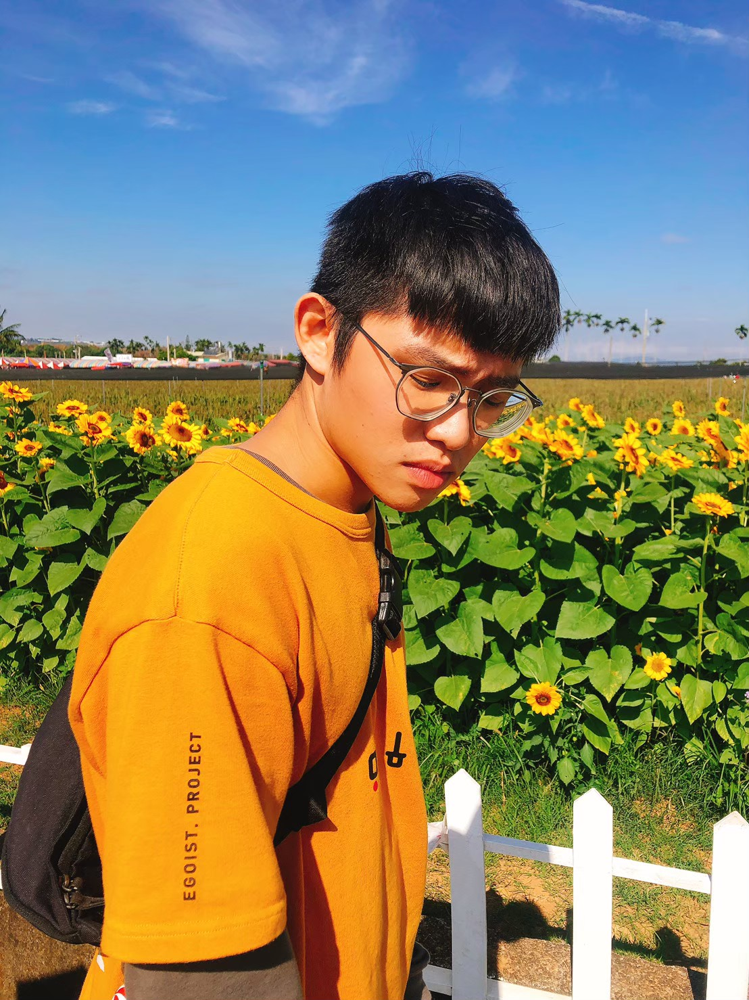

生日： 1997/12/02
血型：Ｏ型
學歷：朝陽科技大學 資管系 興趣：排球、寫程式
技能：
吳昱諄
 Nantou, Taiwan
Nantou, Taiwan
生日： 1997/12/02
血型：Ｏ型
學歷：朝陽科技大學 資管系 興趣：排球、寫程式
技能：
求學經歷
從小就對電腦有濃厚的興趣，還記得當時的傳統XP電腦，開著GBA模擬器玩著神奇寶貝，還在懵懵懂懂的跟著遊戲線遊玩；在某一天表哥開啟模擬器的金手指，我整個煥然一新，任何遊戲物品都垂手可得，這直接開啟了我對程式的興趣。
國中畢業時，我選擇用技優的方式去選讀 國立埔里高工-微電腦修護科，而這也是開啟我面對資訊產業的第一步； 高一時大家都努力著考取人生第一張證照丙級-電腦硬體裝修，
之後也陸續學習了網頁架設、網路配線、電子電路設計等...許多課程，最後畢業前也考取了乙級-電腦硬體裝修。
大學時期先就讀嶺東科大資管系再轉學至朝陽科大的資管系；而在朝陽科大專題寫了購物車網站，從這過程中學習了XAMPP伺服器架設、MySQL建置資料庫、JavaScript、PHP，一手將網頁建置起來，雖然最後的成品沒被使用，但這學習的過程讓我瞭解了，要當一位軟體工程師是非常具有挑戰性的；然而我也非常喜歡挑戰，
期許自己未來可以成為一位優秀的軟體工程師。